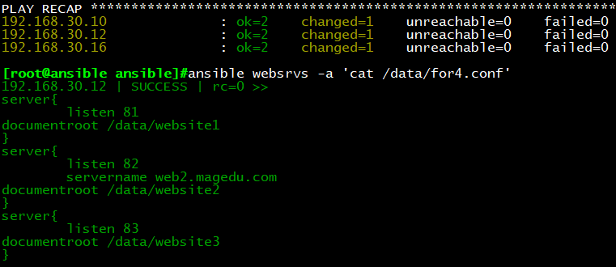

一、环境搭建：
前期准备：一台虚拟机作为ansible，三台虚拟机作为被控端node
主控端：
主机名：ansible
系统版本：CentOS6.9
被控端：
主机名：node1
CPU内核数：4
系统版本：CentSO7.4
主机名：node2
CPU内核数：2
系统版本：CentSO6.9
主机名：node3
CPU内核数：1
系统版本：CentSO6.9
/etc/ansible/hosts文件主机列表配置如下：
二、Playbook中模板templates的用法
templates模板：
功能：根据模块文件动态生成对应的配置文件
使用方法：
（1）templates文件必须存放在templates目录下，且以.j2为后缀
（2）templates模块只能被playbook调用
（3）yam文件需和templates目录平级，目录结构如下：
./
├── temnginx.yml
└── templates
└── nginx.conf.j2
templates使用形式：
字符串：使用单引号或双引号
数字：整数，浮点数
列表：[item1, item2, …]
元组：(item1, item2, …)
字典：{key1:value1, key2:value2, …}
布尔型：true/false
算术运算：+, -, *, /, //, %, **
比较操作：==, !=, >, >=, <, <=
逻辑运算：and, or, not
流表达式：For If When
示例1：使用template传输配置文件
cp /etc/nginx/nginx.conf templates/nginx.conf.j2
vim testtemplate.yml
—
– hosts: os6
remote_user: root
tasks:
– name: install package
yum: name=nginx
– name: copy template
template: src=nginx.conf.j2 dest=/etc/nginx/nginx.conf
– name: start service
service: name=nginx state=started enabled=yes
执行结果：运行playbook后，我们发现work process进程数量与虚拟机cpu内核数量是一致的，接下来我
们将把配置模板中的work process进程数量与系统自带变量结合起来引用。
示例2：template引用系统变量
ansible websrvs -m setup |grep ‘cpu’
vim templates/nginx.conf.j2
worker_processes NaN;
vim testtemplate.yml
—
– hosts:os6
remote_user: root
tasks:
– name: install package
yum: name=nginx
– name: copy template
template: src=nginx.conf.j2 dest=/etc/nginx/nginx.conf
notify: restart service
– name: start service
service: name=nginx state=started enabled=yes
handlers:
– name: restart service
service:name=nginx state=restarted
执行结果：再次运行playbook后，我们发现worker process进程数量等于cpu核心数量加2，这样template
就能帮我们实现根据不同主机性能定制相应的配置。

示例3：hosts文件普通变量修改nginx服务端口
vim /etc/ansible/hosts
192.168.30.101 httpd_port=81
192.168.30.102 httpd_port=82
vim templates/nginx.conf.j2
server {
listen default server
listen [::]: default server
}
三、Playbook中逻辑语句的使用
When：
条件测试:如果需要根据变量、facts或此前任务的执行结果来做为某task执行与
否的前提时要用到条件测试,通过when语句实现，在task中使用，jinja2的语法
查看发行版本系统变量：
ansible srv -m setup filter=”*distribution”
示例1：
vim testtemplate.yml
—
– hosts: all
remote_user: root
tasks:
– name: install package
yum: name=nginx
– name: copy template for centos7
template: src=nginx.conf7.j2 dest=/etc/nginx/nginx.conf
when: ansible_distribution_major_version == “7”
notify: restart service
– name: copy template for centos6
template: src=nginx.conf6.j2 dest=/etc/nginx/nginx.conf
when: ansible_distribution_major_version == “6”
notify: restart service
– name: start service
service: name=nginx state=started enabled=yes
handlers:
– name: restart service
service:name=nginx state=restarted
执行结果:当when语句不匹配时，将skipping直接跳过，仅执行与when语句匹配的语句内容，最终
CentOS6,7根据不同的版本号生成对应的配置并启动服务。
with_items：迭代
迭代：当有需要重复性执行的任务时，可以使用迭代机制
对迭代项的引用，固定变量名为“item”
要在task中使用with_items给定要迭代的元素列表
列表格式：
字符串
字典
示例1：利用迭代一次创建多个文件，安装多个命令包
vim testitem.yml
—
– hosts: all
remote_user: root
tasks:
– name: create some file
file: name=/data/ state=touch
when: ansible_distribution_major_version == “7”
with_items:
– file1
– file2
– file3
– name: install some packages
yum: name=
with_items:
– htop
– sl
– hping3
执行结果：当系统为CentOS7版本时，在/data目录下创建file1-3文件，安装htop，sl，hping3命令
示例2：使用迭代创建组
vim testitem2.yml
—
– hosts: all
remote_user: root
tasks:
– name: create some groups
group: name=
when: ansible_distribution_major_version == “7”
with_items:
– g1
– g2
– g3
执行结果：当系统版本为CentOS7时，创建g1,g2,g3组
示例3：使用迭代配合字典创建用户与组
vim testitem2.yml
—
– hosts: all
remote_user: root
tasks:
– name: create some groups
group: name=
with_items:
– g1
– g2
– g3
– name: create some users
user: name= group=
with_items:
– { name: ‘user1’,group: ‘g1’ }
– { name: ‘user2’,group: ‘g2’ }
– { name: ‘user3’,group: ‘g3’ }
执行结果：所有主机上创建user1，user2，user3用户，且主组为g1，g2，g3
for 与 if
示例1：template，for
vim for1.conf.j2
vim testfor.yml
—
– hosts: websrvs
remote_user: root
vars:
ports:
– 81
– 82
– 83
tasks:
– name: copy conf
template: src=for1.conf.j2 dest=/data/for1.conf
执行结果：每台主机生成for1.conf文件，内容如下
示例2：template，for，引用字典
vim for2.conf.j2
cp testfor.yml testfor2.yml
vim testfor2.yml
—
– hosts: websrvs
remote_user: root
vars:
ports:
– listen_port: 81
– listen_port: 82
– listen_port: 83
tasks:
– name: copy conf
template:src=for2.conf.j2 dest/data/for2.conf
执行结果：每台主机生成for2.conf文件，内容如下
###
示例3：for循环中调用字典
vim for3.conf.j2
cp testfor2.yml testfor3.yml
vim testfor3.yml
—
– hosts: websrvs
remote_user: root
vars:
ports:
– web1:
port: 81
name: web1.magedu.com
rootdir: /data/website1
– web2:
port: 82
name: web2.magedu.com
rootdir: /data/website2
– web3:
port: 83
name: web3.magedu.com
rootdir: /data/website3
tasks:
– name: copy conf
template:src=for3.conf.j2 dest/data/for3.conf
执行结果：每台主机生成for3.conf文件，内容如下
示例4：for循环中调用if
vim for4.conf.j2
cp testfor3.yml testfor4.yml
vim testfor4.yml
—
– hosts: websrvs
remote_user: root
vars:
ports:
– web1:
port: 81
#name: web1.magedu.com
rootdir: /data/website1
– web2:
port: 82
name: web2.magedu.com
rootdir: /data/website1
– web3:
port: 83
#name: web3.magedu.com
rootdir: /data/website1
tasks:
– name: copy conf
template:src=for4.conf.j2 dest/data/for4.conf
执行结果：每台主机生成for3.conf文件，内容如下，web1与web3的name没赋值，所有跳过，web2的
name被赋值，文件中输出结果

四、Roles角色
角色（roles）：角色集合
roles/
mysql/
httpd/
nginx/
memcached/
/roles/project/ :项目名称,有以下子目录
files/ ：存放由copy或script模块等调用的文件
templates/：template模块查找所需要模板文件的目录
tasks/：定义task,role的基本元素，至少应该包含一个名为main.yml的文件；其它的文
件需要在此文件中通过include进行包含
handlers/：至少应该包含一个名为main.yml的文件；其它的文件需要在此文件中通过
include进行包含
vars/：定义变量，至少应该包含一个名为main.yml的文件；其它的文件需要在此文件
中通过include进行包含
meta/：定义当前角色的特殊设定及其依赖关系,至少应该包含一个名为main.yml的文
件，其它文件需在此文件中通过include进行包含
default/：设定默认变量时使用此目录中的main.yml文件
建议：roles创建在ansible目录
mkdir roles
mkdir roles/{httpd,mysql,memcache,nginx} -pv
示例1：定义nginx角色
思路：
niginx
1.group:nginx
2.user:nginx
3.yum:nginx
4.template:nigin.conf.j2
5.service:nginx
目录结构如下：
cd nginx
mkdir tasks templates
cd tasks
vim group.yml
– name: create group
group: name=nginx gid=80
vim user.yml
– name: create user
user: name=nginx group=nginx uid=80 shell=/sbin/noligin
vim yum.yml
– name: install package
yum: name=nginx
vim start.yml
– name: start service
service: name=nginx state=started enabled=yes
vim restart.yml
– name: restart service
service: name=nginx state=restarted
cp /etc/nginx/nginx.conf template/nginx.conf.j2
vim template/nginx.conf.j2
worker_processes NaN;
vim templ.yml
– name: copy conf
template: src=nginx.conf.j2 dest=/etc/nginx/nginx.conf
vim main.yml
– include: group.yml
– include: user.yml
– include: yum.yml
– include: templ.yml
– include: start.yml
调用角色的剧本要和roles目录在同一文件夹
vim nginx_roles.yml
– hosts: websrvs
romete_user: root
roles:
– role: nginx
ansible-playbook -C nginx_role.yml
执行结果如下：
示例2：增加httpd角色
结构目录如下：
cd httpd/
mkdir tasks
cd tasks/
vim user.yml
– name: create user
user: name=apache system=yes shell=/sbin/nologin
cd httpd/
mkdir files
cp httpd.conf files/
cd /tasks/
模拟编译安装yum
vim copyfile.yml
– name: copy files
copy: src=httpd.conf dest=/data/ own=apache
vim main.yml
– incluse: user.yml
– incluse: copyfile.yml
vim httpd_role.yml
– hosts: websrvs
romete_user: root
roles:
– role: httpd
执行结果如下：
示例3：同时调用两个roles角色
目录结构：

cp niginx_role.yml some_role.yml
vim some_role.yml
– hosts: websrvs
romete_user: root
roles:
– role: httpd
– role: nginx
执行结果如下：
###
示例4：一个roles角色调用另一个roles角色的task任务
目标：nginx调用httpd的copyfile
vim main.yml
– include: group.yml
– include: user.yml
– include: yum.yml
– include: templ.yml
– include: start.yml
– inclide: roles/httpd/tasks/copyfile.yml
示例5：roles playbook tags
目录结构如下：
cp -r nginx/ app/ 首先虚构一个app的role
vim some_role2.yml
– hosts: websrvs
romete_user: root
roles:
– { role: httpd,tags:[‘web’,’httpd’]}
– { role: nginx,tags:[‘web’,’nginx’]}
– { role: app,tags:’app’}
ansible-playbook -t web some_role.yml
执行结果：只执行标签为web的role
###
示例6：roles playbook tags when
cp -r nginx/ app/ 虚构一个role
vim some_role3.yml
– hosts: all
romete_user: root
roles:
– { role: httpd,tags:[‘web’,’httpd’]}
– { role: nginx,tags:[‘web’,’nginx’],when: ansible_distribution_major_version==”7″}
– { role: app,tags:’app’}
ansible-playbook -t web some_role.yml
执行结果：至执行tags标签为web的roles，当主版本号为7时，才执行nginx的role
###
示例7：综合演示
结构目录：
rm -rf /app
mkdir app
cd app
mkdir tasks templates vars handlers files
cd tasks/
vim group.yml
– name: create group
group: name=app system=yes gid=123
vim user.yml
– name: create user
user: name=app group=app system=yes shell=/sbin/nologin uid=123
vim yum.yml
– name: install package
yum: name=httpd
cp /etc/httpd/conf/httpd.conf /templates/httpd.conf.j2
vim temlates/httpd.conf.j2
Listen NaN
User
Group
vim /vars/main.yml
username: app
groupname: app
vim templ.yml
– name: copy conf
temlplate: src=httpd.conf.j2 dest=/etc/httpd/conf/httpd.conf
notify: restart service
vim start.yml
– name: start service
service: name=httpd state=started enabled=yes
vim handlers/main.yml
– name: restart service
service: name=httpd state=restarted
touch files/vhosts.conf
vim copyfile.yml
– name: copy config
copy: src=vhosts.conf dest=/ect/httpd/conf.d/
vim main.yml
– include: group.yml
– include: user.yml
– include: yum.yml
– include: templ.yml
– include: copyfile.yml
– include: start.yml
cd ansible/
vim app_role.yml
– hosts: websrvs
remote_user: root
roles:
– role: app
执行结果如下：
示例8：部署memcached，占用内存为物理内存1/4
yum install memcached
目录结构：
cp /etc/sysconfig/memcached templates/memcached.j2
vim memcached.j2
CACHESIZE=”NaN”
vim tasks/yum.yml
– name: install package
yum: name=memcached
vim templ.yum
– name: copy conf
template: src=memcached.j2 dest=/etc/sysconfig/memcached
vim start.yml
– name: start service
service: name=memcached state=started enabled=yes
vim main.yml
– include: yum.yml
– include: templ.yml
– inculde: start.yml
vim memcached_role.yml
– hosts: os6
remote_user: root
roles:
– role: memcached
ansible-playbook memcached_role.yml
执行结果如下：
远程查看配置文件，确认生效：